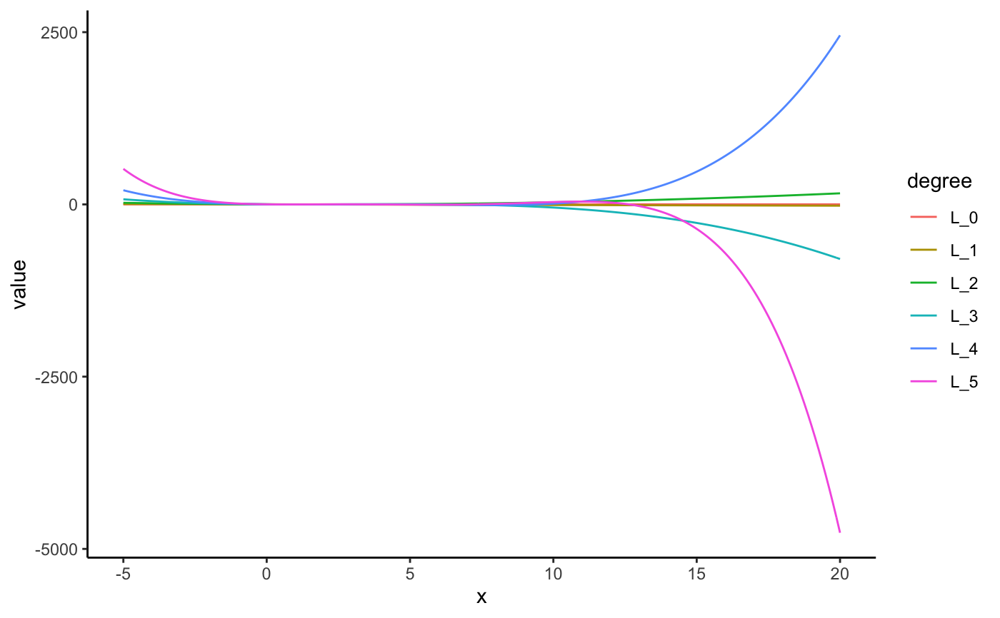
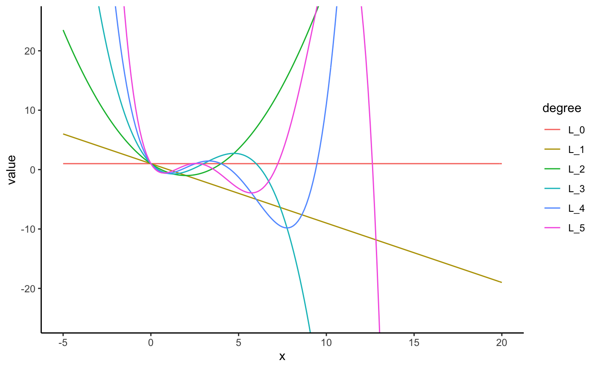

Generalized Laguerre polynomials as computed by orthopolynom.
laguerre(degree, alpha = 0, indeterminate = "x", normalized = FALSE)
| degree | degree of polynomial |
|---|---|
| alpha | generalization constant |
| indeterminate | indeterminate |
| normalized | provide normalized coefficients |
a mpoly object or mpolyList object
laguerre(0)#> 1laguerre(1)#> 1 - xlaguerre(2)#> 1 - 2 x + 0.5 x^2laguerre(3)#> 1 - 3 x + 1.5 x^2 - 0.1666667 x^3laguerre(4)#> 1 - 4 x + 3 x^2 - 0.6666667 x^3 + 0.04166667 x^4laguerre(5)#> 1 - 5 x + 5 x^2 - 1.666667 x^3 + 0.2083333 x^4 - 0.008333333 x^5laguerre(6)#> 1 - 6 x + 7.5 x^2 - 3.333333 x^3 + 0.625 x^4 - 0.05 x^5 + 0.001388889 x^6laguerre(2)#> 1 - 2 x + 0.5 x^2laguerre(2, normalized = TRUE)#> 1 - 2 x + 0.5 x^2laguerre(0:5)#> 1 #> -1 x + 1 #> 0.5 x^2 - 2 x + 1 #> -0.1666667 x^3 + 1.5 x^2 - 3 x + 1 #> 0.04166667 x^4 - 0.6666667 x^3 + 3 x^2 - 4 x + 1 #> -0.008333333 x^5 + 0.2083333 x^4 - 1.666667 x^3 + 5 x^2 - 5 x + 1laguerre(0:5, normalized = TRUE)#> 1 #> -1 x + 1 #> 0.5 x^2 - 2 x + 1 #> -0.1666667 x^3 + 1.5 x^2 - 3 x + 1 #> 0.04166667 x^4 - 0.6666667 x^3 + 3 x^2 - 4 x + 1 #> -0.008333333 x^5 + 0.2083333 x^4 - 1.666667 x^3 + 5 x^2 - 5 x + 1laguerre(0:5, indeterminate = "t")#> 1 #> -1 t + 1 #> 0.5 t^2 - 2 t + 1 #> -0.1666667 t^3 + 1.5 t^2 - 3 t + 1 #> 0.04166667 t^4 - 0.6666667 t^3 + 3 t^2 - 4 t + 1 #> -0.008333333 t^5 + 0.2083333 t^4 - 1.666667 t^3 + 5 t^2 - 5 t + 1# visualize the laguerre polynomials library(ggplot2); theme_set(theme_classic()) library(tidyr) s <- seq(-5, 20, length.out = 201) N <- 5 # number of laguerre polynomials to plot (lagPolys <- laguerre(0:N))#> 1 #> -1 x + 1 #> 0.5 x^2 - 2 x + 1 #> -0.1666667 x^3 + 1.5 x^2 - 3 x + 1 #> 0.04166667 x^4 - 0.6666667 x^3 + 3 x^2 - 4 x + 1 #> -0.008333333 x^5 + 0.2083333 x^4 - 1.666667 x^3 + 5 x^2 - 5 x + 1# see ?bernstein for a better understanding of # how the code below works df <- data.frame(s, as.function(lagPolys)(s)) names(df) <- c("x", paste0("L_", 0:N)) mdf <- gather(df, degree, value, -x) qplot(x, value, data = mdf, geom = "line", color = degree)# laguerre polynomials are orthogonal with respect to the exponential kernel: L2 <- as.function(laguerre(2))#>#>#>#> -5.99989e-07 with absolute error < 5.9e-06#> -1.2e-07 with absolute error < 1.1e-07#> -1.199998e-07 with absolute error < 3e-07